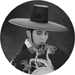

 

سونگ جونگ-کی
بیوگرافی
 بازیگر اهل کرۀ جنوبی است .
وی با ایفای نقش در سریال «رسوایی سونگکیونکوان» و حضور در برنامۀ «مرد دونده» به شهرت رسید. اوّلین حضور چشمگیر او در سال ۲۰۱۲، و در ملودرام «مرد بیگناه» بود. همچنین در فیلم موفّق «پسر گرگنما» نیز به ایفای نقش پرداخته است.
او در سال ۲۰۱۶ و پس از سپری کردن خدمت سربازی، با ایفای نقش در سریال «نسل خورشید»، به حرفۀ خود بازگشت.
بازیگر اهل کرۀ جنوبی است .
وی با ایفای نقش در سریال «رسوایی سونگکیونکوان» و حضور در برنامۀ «مرد دونده» به شهرت رسید. اوّلین حضور چشمگیر او در سال ۲۰۱۲، و در ملودرام «مرد بیگناه» بود. همچنین در فیلم موفّق «پسر گرگنما» نیز به ایفای نقش پرداخته است.
او در سال ۲۰۱۶ و پس از سپری کردن خدمت سربازی، با ایفای نقش در سریال «نسل خورشید»، به حرفۀ خود بازگشت.
او از اعضایه ثابت برنامه محبوب رانینگ من بود.
فیلموگرافی
فیلم:
A Frozen Flower/2008/Yoo Ha
Five Senses of Eros/2009/Daniel H. Byun/Hur Jin-ho/Yoo Young-sik/Oh Ki-hwan/Min Kyu-dong
The Case of Itaewon Homicide/2009/Hong Ki-sun
Hearty Paws 2/2010/Lee Jung-chul
Penny Pinchers/2011/Kim Jung-hwan
Pengi and Sommi/2012
The Grand Heist (cameo)/2012/Kim Joo-ho
A Werewolf Boy/2012/Jo Sung-hee
Battleship/2016
سریال:
Get Karl! Oh Soo-jung/2007/Park Hyung-ki,Jin Hyuk,Kwon Hyuk-chan
Love Racing/2008
My Precious You/2008
Triple/2009/Lee Yoon-jung
My Fair Lady (cameo)/2009/Ji Young-soo
Will It Snow for Christmas?/2009/Choi Moon-suk
Obstetrics and Gynecology Doctors/2010
Sungkyunkwan Scandal/2010/Kim Won-seok,Hwang In-hyuk
Deep Rooted Tree/2011/Jang Tae-yoo
The Innocent Man/2011/Kim Jin-won,Lee Na-jeong
Descendants of the Sun/2016/Lee Eung-bok,Baek Sang-hoon
The Sound of Heart (cameo)/2016
گالری عکس